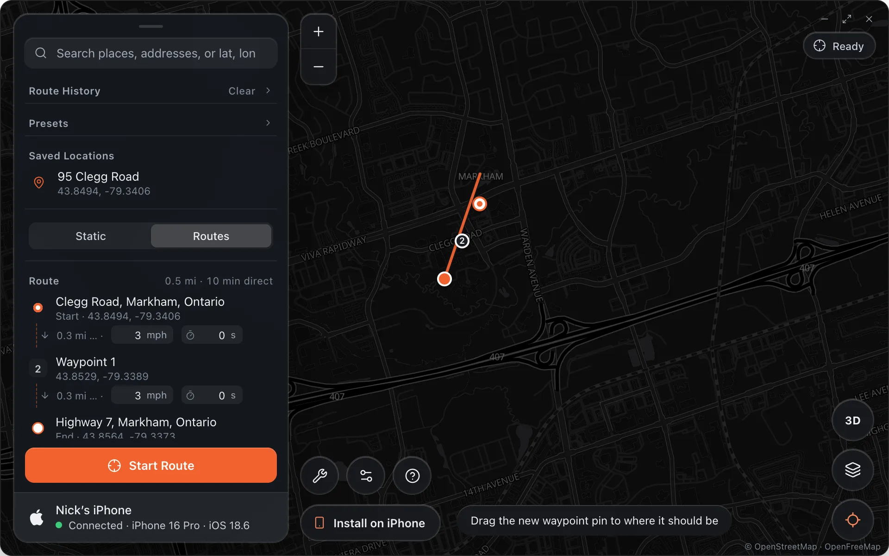
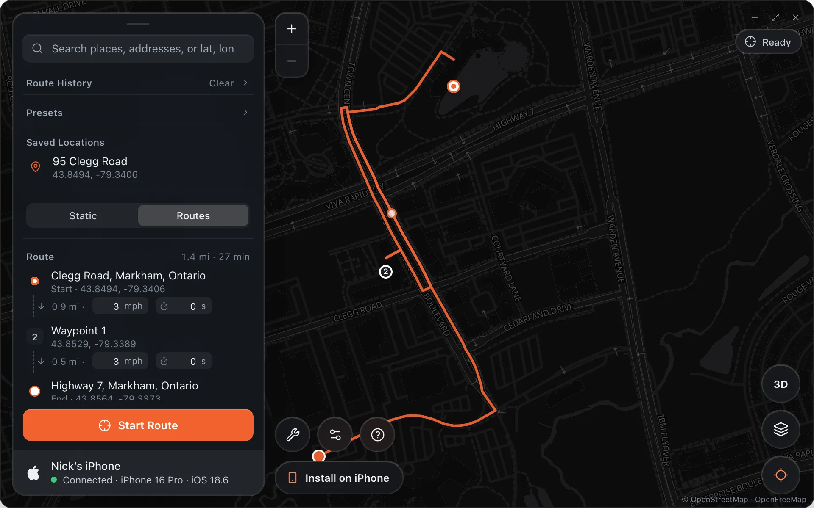
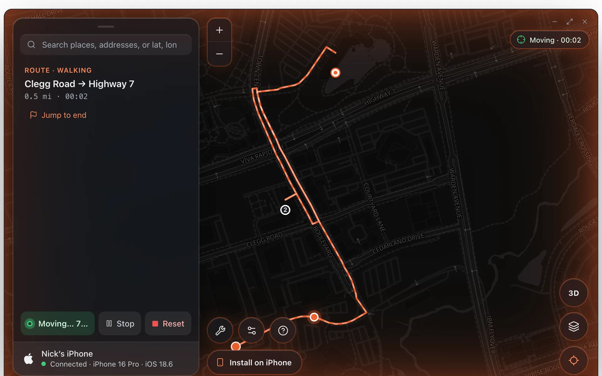
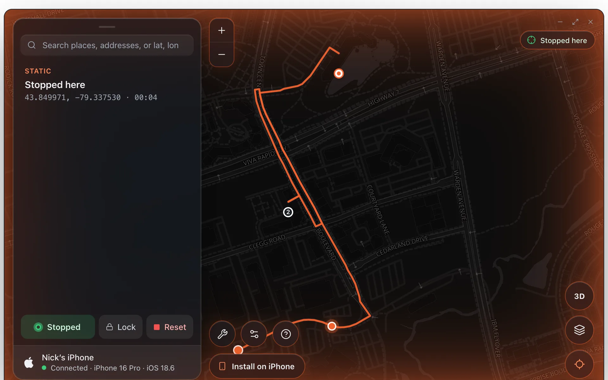

Change Location
Routes Mode
Routes mode simulates movement along a path. Instead of changing your location to a single point, your iPhone’s location moves along a route over time, on real roads.
Switching to Routes Mode
Click Routes in the mode toggle in the panel to switch from Static mode. You cannot switch modes while a route is running or while your location is changed; press Reset first.
Setting Up a Route
Place the start and end by clicking the map or by searching in the bar at the top. The first click is stop 1, the second stop 2, and the list shows each stop’s street with the town beneath it. Any pin can be dragged afterwards, and the rows in the panel drag up and down to change the order.

Drawing a Route
Press Draw under the stops. The rest of the app fades back and a small bar at the top says what to do: draw on the map with the mouse held down, lift to end a stroke and draw more, ⌫ undoes the last stroke, and Esc (or Done) finishes. With Follow roads on the drawing is fitted to the roads, so what you drew is what the drive looks like in Find My. With it off the phone flies along your line exactly. Clear removes the drawing.
Choosing a Travel Mode
Use the Travel Mode control in the route panel to choose how your location moves along the route:
- Walk, the slowest
- Cycle, medium
- Drive, a steady car
- Auto: each road at its posted speed, a little over the limit on freeways, with lane changes on fast roads. Nothing is perfectly constant unless you type a speed yourself.
Stop signs, under More options, pauses a moment at intersections: Off, All, or Half (every other one). Settings › Movement › Movement Realism keeps the pace wandering slightly the way a real driver's does.
The Follow roads switch keeps the route on real streets (the line on the map updates to the road route as soon as the end is placed). Turn it off to fly directly from stop to stop; Alibi warns before starting that this looks unnatural.
The Speed row shows the exact figure, in mph or km/h depending on your region, and you can type any number. Each leg between two stops also has its own speed and an optional pause in seconds, shown under the stop, so a route can walk one part and drive another. In Auto the per-leg speed is hidden, since each road sets its own.
Adding Waypoints
To customise the path the route takes, add up to 10 waypoints. Click the map again after placing the end, or press Add waypoint, which drops a pin halfway along the last leg for you to drag into place. Waypoints are removed with the × on their row or on the pin’s tooltip.
Previewing the Route
Click Preview Route to calculate the road route (through OSRM) and draw it on the map. A pale marker runs the whole route in a few seconds so you can check it before the phone moves.

Starting the Route
Click Start Route. The iPhone’s location moves along the route in real time at the selected speed. The pill reads Moving with a timer, the route line animates, and the panel shows the current leg, the next stop, the distance and time left and a progress bar. Save in the panel keeps the running route in Saved Locations. Jump to end, at the bottom of the panel, skips to the destination after a confirmation, since a jump never looks real.

Stay at End
Leave Stay at end on before starting to keep your location at the destination when the route finishes. Turn it off and your location resets to real GPS when the route ends. Loop repeats the route until you stop it; turning on one of the two turns the other off, since a looping route never reaches its end.
Stop, Continue and Reset
While a route is running, Stop pauses it right where the phone is and holds that spot; the rest of the route waits, and Continue picks it up again from the same point. Reset drops the route and puts real GPS back. Picking a new place while a route runs offers Jump here, which stops the route and holds that spot instead.
